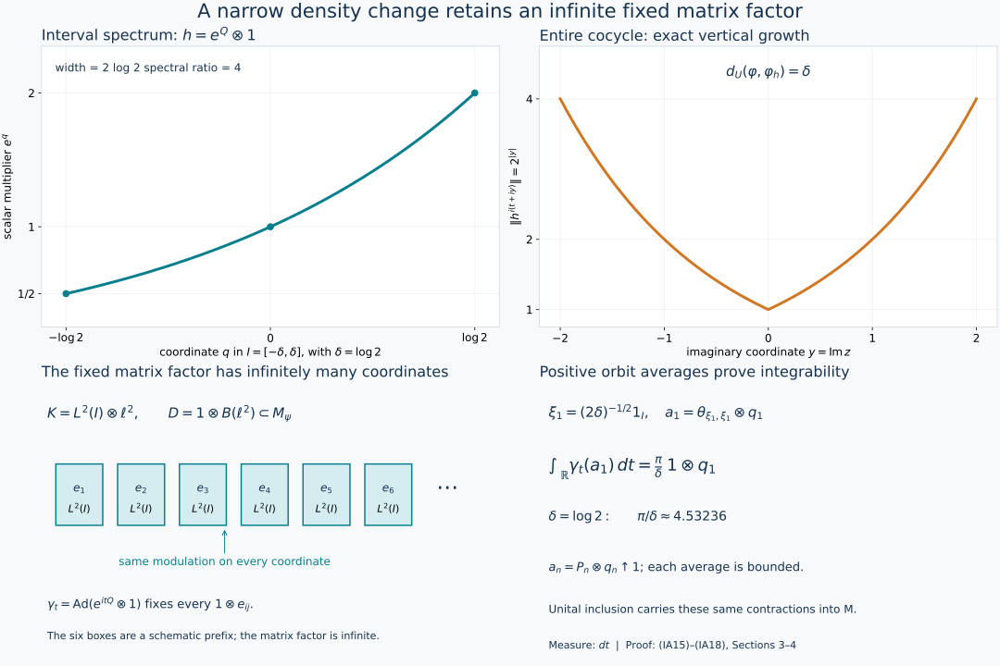

Commuting approximations and finite domains of weights
Self-checked by the writing AI. Original exposition, model, data and drawing code: CC0-1.0. Source publications and installed fonts retain their own terms.
A small bounded change of density can make a modular action integrable while leaving an infinite matrix algebra fixed. We construct this change inside the original centralizer. On a type III\(_1\) factor it yields uniform approximation of one infinite-multiplicity weight by inner translates of another. For positive discrete type, a different bounded change makes the weight periodic. Both constructions lead to exact conjugacy of all four finite domains.
1. The conclusions and the proof inputs
Unless a different scope is stated, \(M\ne0\) has separable predual and properly infinite identity. It need not be a factor. All weights in this lesson are faithful, normal and semifinite; equality and order of weights refer to the entire positive cone, including infinite values. Write \[ \begin{aligned} F_\varphi&=\{x\in M_+:\varphi(x)<\infty\},& N_\varphi&=\{x\in M:\varphi(x^*x)<\infty\},\\ A_\varphi&=N_\varphi\cap N_\varphi^*,& \mathfrak m_\varphi&=\operatorname{span}\{y^*x:x,y\in N_\varphi\}. \end{aligned}\tag{IA1} \] Infinite multiplicity means that the centralizer \(M_\varphi\) is properly infinite. This is stronger than the condition \(\varphi(1)=\infty\).
Use the normalized cocycles of BC4–5. The relation \(\varphi\preceq_a\psi\) means that \((D\varphi:D\psi)_t\) has a contractive extension to \(-a\leq\operatorname{Im}z\leq0\), holomorphic inside and continuous in the intrinsic sigma-strong topology on the closed strip. Write \(\preceq_\infty\) when this holds at every depth \(a>0\), and put \[ d_U(\varphi,\psi)=\inf\{r\geq0: e^{-r}\varphi\preceq_\infty\psi \preceq_\infty e^r\varphi\}, \qquad\inf\varnothing=\infty.\tag{IA2} \] The proved uniform geometry, UM1–6 makes this an extended metric and gives the exact criterion \[ \begin{gathered} e^{-r}\varphi\preceq_\infty\psi\preceq_\infty e^r\varphi\\ \Longleftrightarrow\quad U(t)=(D\psi:D\varphi)_t\text{ extends norm-entirely,}\quad \|U(z)\|\leq e^{r|\operatorname{Im}z|}. \end{gathered}\tag{IA3} \] The half-strip theorem, WO2, identifies \(\preceq_{1/2}\) with ordinary weight order. These analytic results supply the order and distance estimates used below.
We prove the following three assertions.
- Commuting integrable approximation. If \(M_\varphi\) is properly infinite, then for every \(\varepsilon>0\) there is a weight \(\psi\) of infinite multiplicity such that \(\sigma^\psi\) is integrable, \[ \varphi\sigma_t^\psi=\varphi,\qquad \psi\sigma_t^\varphi=\psi\quad(t\in\mathbb R),\qquad d_U(\varphi,\psi)<\varepsilon.\tag{IA4} \]
- Uniform inner orbits in type III\(_1\). If \(M\) is a type III\(_1\) factor and \(\varphi_1,\varphi_2\) have infinite multiplicity, then \[ \inf_{u\in\mathcal U(M)} d_U(\varphi_1\circ\operatorname{Ad}u,\varphi_2)=0. \tag{IA5} \]
- Conjugacy of finite domains. Under the hypotheses of assertion 2, or when \(M\) is a type III\(_\lambda\) factor with \(0<\lambda<1\) and merely \(\varphi_1(1)=\varphi_2(1)=\infty\), there is a unitary \(u\in M\) such that \[ \begin{aligned} u^*F_{\varphi_1}u&=F_{\varphi_2},& u^*N_{\varphi_1}u&=N_{\varphi_2},\\ u^*A_{\varphi_1}u&=A_{\varphi_2},& u^*\mathfrak m_{\varphi_1}u&=\mathfrak m_{\varphi_2}. \end{aligned}\tag{IA6} \]
The proof of the positive-\(\lambda\) clause also works without separable predual, because the inner-period and generalized-trace comparison providers have that full scope. Neither assertion 1 nor assertion 2 is promoted here to that larger scope. Assertion 3 makes no arbitrarily small uniform-distance claim in positive discrete type.
The other inputs are concrete earlier results: PC3,5,7 for filling isometries and countable projection comparison; CZ0,1,4,6 for finite-domain stability and exact centralizer perturbations; TID, TI7–9 for bounded positive orbit averages; CGF, CI1 and CI35–39 for the stabilized presentation and supported integrability criterion; MIV4 for its coefficient center in type III\(_1\); and PW1–3 together with DDP2,3,7 for periodic correction and its scalar-sensitive comparison.
2. Bounded comparisons preserve the entire finite structure
Suppose \(c,C>0\) and \[ c\varphi\leq\psi\leq C\varphi\quad\text{on }M_+. \tag{IA7} \] For a positive element, finiteness of either value implies finiteness of the other; if one value is infinite, the appropriate lower inequality forces the other to be infinite. Thus \(F_\varphi=F_\psi\). Apply the same argument to \(x^*x\) to obtain \(N_\varphi=N_\psi\). Applying it also to \(xx^*\) gives equality of the star intersections. Finally the sets of products \(y^*x\), and hence their linear spans, coincide. We have proved equality of all four sets in (IA1).
This applies whenever \(d_U(\varphi,\psi)<\infty\). Choose any finite admissible \(r\) in (IA2), restrict both all-depth comparisons to depth \(1/2\), and use the half-strip theorem. It gives (IA7) with \(c=e^{-r}\) and \(C=e^r\). No difference of infinite weight values is formed.
For every unitary \(u\), let \(\varphi^u=\varphi\circ\operatorname{Ad}u\), where \(\operatorname{Ad}u(x)=uxu^*\). Directly from (IA1), \[ (F_{\varphi^u},N_{\varphi^u},A_{\varphi^u},\mathfrak m_{\varphi^u}) =u^*(F_\varphi,N_\varphi,A_\varphi,\mathfrak m_\varphi)u. \tag{IA8} \] For example \((uxu^*)^*(uxu^*)=ux^*xu^*\), and conjugation carries \(y^*x\) to \((uyu^*)^*(uxu^*)\). A positive scalar multiple of a weight has exactly the same four domains.
We will also use unitary invariance of the distance. The actual normal-isomorphism covariance BC25 gives \[ (D\psi^u:D\varphi^u)_t=u^*(D\psi:D\varphi)_t u. \tag{IA9} \] Conjugating a strip extension preserves its norm, holomorphy and both intrinsic boundary topologies. Conjugation by \(u^*\) gives the converse. Thus it preserves every strip order and \[ d_U(\varphi^u,\psi^u)=d_U(\varphi,\psi). \tag{IA10} \]
3. A narrow spectral interval with infinitely many fixed copies
Let \(C\subseteq M\) be a unital properly infinite von Neumann algebra. The filling-family proof in PC5 supplies \(v_j\in C\) satisfying \[ v_i^*v_j=\delta_{ij}1,\qquad\sum_{j\geq1}v_jv_j^*=1 \quad\text{strongly}.\tag{IA11} \] In a faithful representation on \(H\), the map \(V:\ell^2\otimes H\to H\), \(V(e_j\otimes\eta)=v_j\eta\), is an isometry on finite sums and onto because the range projections fill the identity. Its adjoint has coordinates \((v_j^*\eta)_j\). Consequently \[ b\longmapsto V(b\otimes1_H)V^*\quad(b\in B(\ell^2)) \tag{IA12} \] is a faithful normal unital star homomorphism. Its finite matrices belong to \(C\); their bounded strong-star limits also belong to \(C\). This constructs a unital type I\(_\infty\) subfactor rather than an inclusion into a proper corner.
Fix \(\delta>0\), put \(I=[-\delta,\delta]\), and identify \(\ell^2\) with the separable infinite-dimensional Hilbert space \[ K=L^2(I,dq)\otimes\ell^2. \] Through (IA12) regard \(B(K)\) as a unital subfactor \(B\) of \(C\). Define \[ Q\xi(q)=q\xi(q),\qquad h=e^Q\otimes1,\qquad e^{-\delta}1\leq h\leq e^\delta1. \tag{IA13} \] Here \(Q\) is bounded self-adjoint on the entire first Hilbert factor. Its spectral projections are multiplication by the characteristic functions of Borel subsets of \(I\). The spectrum of \(h\) is \([e^{-\delta},e^\delta]\); every relatively open subinterval has a nonzero spectral projection. The second factor \[ D=1_{L^2(I)}\otimes B(\ell^2) \subseteq\{h\}'\cap B\tag{IA14} \] has the same identity as \(M\), and is properly infinite. Thus shrinking \(I\) does not remove the infinite multiplicity.
We check directly that \(\gamma_t=\operatorname{Ad}h^{it}\) is integrable on \(B\). Choose an orthonormal basis \((\xi_j)\) of \(L^2(I)\) made of bounded step functions, starting with \(\xi_1=(2\delta)^{-1/2}1_I\). One obtains it by Gram–Schmidt from a countable dense collection of interval step functions, retaining each nonzero remainder. Density and boundedness are preserved in this construction, as in the basis argument of TID before TI8. Let \(P_n\) project onto the first \(n\) basis vectors and let \(q_n\) project onto the first \(n\) standard coordinates in \(\ell^2\). Then \[ a_n=P_n\otimes q_n\uparrow1_B. \tag{IA15} \] These are increasing projections: both tensor factors increase, and their ranges are nested with dense union.
For \(\eta\in L^2(I)\), extend \(\overline{\xi_j}\eta\) by zero outside \(I\). It is in \(L^1(\mathbb R)\cap L^2(\mathbb R)\): use Cauchy–Schwarz for the first assertion and boundedness of \(\xi_j\) for the second. The exact scalar Plancherel calculation proved in TID(TI8), with integration measure \(dt\), gives \[ \int_{\mathbb R} \big|\langle\eta,e^{itQ}\xi_j\rangle\big|^2dt =2\pi\int_I|\xi_j(q)|^2|\eta(q)|^2dq. \tag{IA16} \] Thus the positive orbit integral of the rank-one projection \(\theta_{\xi_j,\xi_j}\) is the bounded operator \(2\pi M_{|\xi_j|^2}\). Testing arbitrary Hilbert vectors and summing the finite tensor coordinates proves \[ E_\gamma(a_n):=\int_{\mathbb R}\gamma_t(a_n)\,dt =2\pi M_{\sum_{j=1}^n|\xi_j|^2}\otimes q_n, \qquad \|E_\gamma(a_n)\|\leq2\pi\sum_{j=1}^n\|\xi_j\|_\infty^2. \tag{IA17} \] The integrals are increasing limits of compact positive integrals. The vector identity and its bound give strong convergence to the displayed bounded operator. In particular, \[ E_\gamma(a_1)=\frac{\pi}{\delta}\,1_{L^2(I)}\otimes q_1. \tag{IA18} \] There is no bound uniform in \(n\) asserted or needed.
For completeness, the direction of the integrability criterion used here is short. If \(0\leq b_n\uparrow1\) have bounded positive orbit averages for an action \(\alpha\), then \(b_n^{1/2}\) lies in \(\mathfrak n_E=\{x:E_\alpha(x^*x)\text{ is bounded}\}\). This is a left ideal since \(x^*y^*yx\leq\|y\|^2x^*x\). Therefore \(y b_n^{1/2}\in\mathfrak n_E\) and it converges strongly to every \(y\in M\). This proves the required ultraweak density and hence integrability. If the contractions lie in an invariant unital subalgebra, their compact orbit integrals and their bounded limits are the same in that subalgebra and in \(M\). Their supremum remains \(1_M\). This proves exactly the unital-subalgebra permanence used below. TID(TI7) also proves the converse criterion.
4. Insert the model into the original centralizer
Take \(C=M_\varphi\) in Section 3 and choose \(0<\delta<\varepsilon\). With \(h\) as in (IA13), define on every positive element \[ \psi(x)=\varphi(h^{1/2}xh^{1/2}).\tag{IA19} \] The bounded invertible centralizer perturbation proved in CZ1 and CZ4 gives a faithful normal semifinite weight and the whole-cone inequalities \[ e^{-\delta}\varphi\leq\psi\leq e^\delta\varphi. \tag{IA20} \] Here order is in the density parameter, as proved in CZ1. We do not assert the generally false operator inequality \(h^{1/2}xh^{1/2}\leq e^\delta x\). CZ4 and the normalized balanced-matrix computation CZ6 also give \[ \sigma_t^\psi(x)=h^{it}\sigma_t^\varphi(x)h^{-it}, \qquad (D\psi:D\varphi)_t=h^{it}. \tag{IA21} \]
Every element of \(B\) is fixed by \(\sigma^\varphi\), so \(B\) is invariant under \(\sigma^\psi\) and its restricted action is exactly \(\gamma\). The contractions (IA15) and the bounded averages (IA17), now viewed in \(M\), therefore prove integrability of \(\sigma^\psi\). Every element of the unital algebra \(D\) in (IA14) is fixed by (IA21). Its two isometries sending the standard basis into the even and odd coordinates have initial projection \(1_M\) and orthogonal final projections. They belong to \(M_\psi\). Thus \(M_\psi\) is properly infinite.
Both modular invariances in (IA4) follow on the entire positive cone. Since \(\sigma_t^\varphi(h)=h\) and \(\varphi\sigma_t^\varphi=\varphi\), \[ \psi(\sigma_t^\varphi(x)) =\varphi\bigl(\sigma_t^\varphi(h^{1/2}xh^{1/2})\bigr)=\psi(x). \tag{IA22} \] Also \(h^{it}\) is a centralizer unitary for \(\varphi\). CZ0 proves that it preserves \(\varphi\), including infinite values. Formula (IA21) consequently gives \[ \varphi(\sigma_t^\psi(x)) =\varphi(\sigma_t^\varphi(x))=\varphi(x). \tag{IA23} \] These are invariances of the weights, stronger than merely saying that the two automorphism groups commute.
The bounded logarithm \(\log h=Q\otimes1\) gives the norm-entire extension \[ U(z)=h^{iz},\qquad \|U(t+iy)\|=\|h^{-y}\|=e^{\delta|y|}. \tag{IA24} \] The last equality follows from the full interval spectrum in (IA13), including its endpoint suprema; no endpoint eigenvectors are needed. Criterion (IA3) yields \(d_U(\varphi,\psi)\leq\delta<\varepsilon\), proving assertion 1. In fact the equality in (IA24) and uniqueness of entire continuation imply \(d_U(\varphi,\psi)=\delta\): if the distance were smaller, (IA3) with an intermediate exponent and \(y=1\) would contradict (IA24).
The trace of \(\varphi\) on \(B\) played no role. It need not even be semifinite there. For an explicit example, let \(H_0\) be infinite-dimensional and let \[ M=B(H_0\otimes K),\qquad \varphi=\operatorname{Tr}_{H_0}\otimes\operatorname{Tr}_K, \qquad B=1\otimes B(K). \] This \(B\) lies in \(M_\varphi=M\), but \(\varphi(1\otimes b)=\infty\) for every nonzero \(b\geq0\). Indeed a positive vector coefficient of \(b\), repeated through arbitrarily many orthogonal coordinates of \(H_0\), gives arbitrarily large finite lower bounds for the trace. The same holds for \(\psi|_B\) after inserting the invertible \(h\). The restricted action is still integrable by (IA17). Thus replacing this argument by an identification of \(\psi|_B\) with \(\operatorname{Tr}(h\,\cdot)\) would impose an unjustified extra assumption.

The model uses \(\delta=\log2\). Its spectrum runs from \(1/2\) to \(2\), with ratio \(4\); its interval width is \(2\log2\). Equations (IA14), (IA17), (IA18) and (IA24) explain the four panels. The displayed matrix coordinates illustrate the first few members of an infinite factor, not a finite-dimensional approximation used in the proof. This is an operator model inside a centralizer, not a construction of a type III factor. Drawing source, exact formulas and samples, and terms accompany it.
5. An integrable infinite-multiplicity weight in type III\(_1\)
Assume now that \(M\) is a type III\(_1\) factor with separable predual. The actual construction CGF Section 1 supplies a stabilized trace-scaling presentation \[ M=N\rtimes_\theta\mathbb R,\qquad \tau\theta_s=e^{-s}\tau,\qquad \Phi=\widehat\tau,\qquad N=M_\Phi, \tag{IA25} \] with \(N\) properly infinite and \(\Phi\) faithful normal semifinite. It is transported onto the original algebra using filling isometries, so all unitaries constructed below are elements of that original \(M\). Its coefficient algebra has separable predual. The center-flow theorem MIV4 gives \[ S(M)=[0,\infty)\quad\Longrightarrow\quad Z(N)=\mathbb C1. \tag{IA26} \] Thus \(N\) is a factor. The reference \(\Phi\) is dominant: the crossed-product unitaries satisfy \(\Phi\operatorname{Ad}u_s=e^{-s}\Phi\), as proved on the whole cone in CGF(CI2), and its centralizer is properly infinite.
Let \(\psi\) be any faithful integrable weight of infinite multiplicity. The proved supported integrability criterion CGF(CI35–39) gives a projection \(e\in N\) and \(w\in M\) with \[ w^*w=1,\qquad ww^*=e,\qquad \psi(x)=\Phi(w x w^*)\quad(x\geq0). \tag{IA27} \] Indeed the comparison is \(\psi\sim\Phi_e\); its defining partial isometry has the displayed supports because \(\psi\) is faithful. Normal modular covariance carries \(M_\psi\) to \(eNe\), so \(e\) is properly infinite as a projection of \(N\).
The projection \(1_N\) is countably decomposable: a faithful normal state on \(M\), which exists by separable predual, restricts faithfully to \(N\). Since \(N\) is a factor, \(e\ne0\) has central support one. PC7 applies with countably decomposable source \(1_N\) and properly infinite target \(e\), and gives \(1_N\precsim e\). Inclusion gives \(e\precsim1_N\); PC3 then supplies \(v\in N\) with \[ v^*v=e,\qquad vv^*=1. \tag{IA28} \] This is the specific projection comparison needed here; infinite trace alone would not justify it without the countability or cardinal comparison hypotheses.
We spell out why this centralizer partial isometry preserves the cut weight on the entire cone. For \(y\in(eMe)_+\) with \(\Phi(y)<\infty\), put \(x=y^{1/2}\in N_\Phi\). The complete right-multiplication identity CZ0 gives \[ \Phi(vyv^*) =\|\Lambda_\Phi(xv^*)\|^2 =\|J_\Phi\pi_\Phi(v)J_\Phi\Lambda_\Phi(x)\|^2 =\|\Lambda_\Phi(x)\|^2=\Phi(y). \tag{IA29} \] For the third equality, the squared multiplier is \(J_\Phi\pi_\Phi(v^*v)J_\Phi=J_\Phi\pi_\Phi(e)J_\Phi\), which fixes \(\Lambda_\Phi(x)\) because \(xe=x\). The inverse map uses \(v^*\), also in the centralizer. Applying the same finite argument to it shows that a finite value of \(\Phi(vyv^*)\) forces \(\Phi(y)<\infty\). Hence (IA29) holds when either side is infinite as well.
Now \(a=vw\) is unitary: \(a^*a=w^*ew=1\) and \(aa^*=vev^*=1\). Combining (IA27)–(IA29) proves \[ \psi(x)=\Phi(a x a^*)\quad(x\in M_+). \tag{IA30} \] Every faithful integrable infinite-multiplicity weight is therefore unitarily equivalent to the same dominant reference. In particular it is itself dominant: conjugation transports the proper infiniteness of the centralizer and each scalar-absorption unitary. This supplies the needed dominance conclusion from integrability, rather than using it as a new assumption.
6. Approximate the two weights, then match the approximants
Let \(\varphi_1,\varphi_2\) satisfy assertion 2, and fix \(\varepsilon>0\). Section 4 supplies faithful integrable infinite-multiplicity weights \(\psi_j\) with \[ d_U(\varphi_j,\psi_j)<\varepsilon/2\qquad(j=1,2). \tag{IA31} \] By (IA30) choose unitaries \(a_j\) such that \(\psi_j=\Phi\circ\operatorname{Ad}a_j\). Put \(u=a_1^*a_2\); then \(\psi_1^u=\psi_2\). The triangle inequality and (IA10) give \[ \begin{aligned} d_U(\varphi_1^u,\varphi_2) &\leq d_U(\varphi_1^u,\psi_1^u) +d_U(\psi_2,\varphi_2)\\ &=d_U(\varphi_1,\psi_1)+d_U(\psi_2,\varphi_2) <\varepsilon. \end{aligned}\tag{IA32} \] This proves (IA5). For any one such \(u\), the distance is finite. Section 2 then equates the four finite domains of \(\varphi_1^u\) and \(\varphi_2\), and (IA8) gives all of (IA6) with the stated conjugation side.
These weights necessarily have infinite total mass. If a faithful weight \(\rho\) with properly infinite centralizer had finite mass, two centralizer isometries with orthogonal ranges would each give \(\rho(ss^*)=\rho(s^*s)=\rho(1)>0\) by the same finite-domain identity as (IA29). Additivity and their range sum at most one would imply \(2\rho(1)\leq\rho(1)\), a contradiction. The proof does not reverse this implication, and it makes no statement about faithful states in the uniform metric.
7. Correct the modular period in positive discrete type
Let \(0<\lambda<1\), put \(L=-\log\lambda>0\) and \(P=2\pi/L\), and let \(M\) be a type III\(_\lambda\) factor. In this section its predual may be arbitrary. Assume only that \(\varphi_1,\varphi_2\) are faithful normal semifinite and have infinite total mass.
The actual inner-period proof DDP2, including its extension from a full fixed corner in DDP1, says that \(\sigma_P^{\varphi_j}\) is inner. Choose \(b_j\in\mathcal U(M)\) with \[ \sigma_P^{\varphi_j}=\operatorname{Ad}b_j. \tag{IA33} \] Here is the full use of the bounded phase correction. Modular invariance says that \(b_j\) preserves \(\varphi_j\) on \(M_+\). The weight-preserving-unitary criterion CZ0 therefore puts \(b_j\) in \(M_{\varphi_j}\). Since (IA33) fixes that centralizer pointwise, \(b_j\in Z(M_{\varphi_j})\). The proved bounded phase construction PW2, with its full Cayley domain and affiliation verification, supplies \[ 0\leq\Theta_j\leq2\pi1,\qquad \Theta_j\in Z(M_{\varphi_j}),\qquad e^{i\Theta_j}=b_j. \tag{IA34} \] Define \[ k_j=e^{-\Theta_j/P},\qquad \nu_j(x)=\varphi_j(k_j^{1/2}xk_j^{1/2}) \quad(x\in M_+). \tag{IA35} \] The bounded centralizer perturbation gives \[ \lambda1\leq k_j\leq1,\qquad \lambda\varphi_j\leq\nu_j\leq\varphi_j,\qquad \sigma_t^{\nu_j}=\operatorname{Ad}(k_j^{it})\sigma_t^{\varphi_j}. \tag{IA36} \] In particular \(\nu_j(1)=\infty\). Moreover \(k_j^{iP}=b_j^*\), so (IA33) and (IA36) give \(\sigma_P^{\nu_j}=\mathrm{id}\). Thus the \(\nu_j\) are infinite generalized traces in the precise sense used in DDP7: faithful normal semifinite, infinite mass, and modular period \(P\). No assumption about the original centralizers was added. By Section 2, \[ F_{\nu_j}=F_{\varphi_j},\quad N_{\nu_j}=N_{\varphi_j},\quad A_{\nu_j}=A_{\varphi_j},\quad \mathfrak m_{\nu_j}=\mathfrak m_{\varphi_j}. \tag{IA37} \]
We retain the precise scalar in the comparison, and recall its actual construction. Let \(v_t=(D\nu_2:D\nu_1)_t\). Since both modular groups have period \(P\), their covariance gives \(v_P\in Z(M)=\mathbb C1\). There is a unique \(a\in(\lambda,1]\) with \[ v_P=a^{-iP}1.\tag{IA38} \] Indeed \(\log a\in(-L,0]\) parametrizes the circle once because \(PL=2\pi\). Set \(\omega_1=a^{-1}\nu_1\). The scalar cocycle rule gives \((D\nu_2:D\omega_1)_P=1\). The balanced weight \(\Omega=\omega_1\oplus\nu_2\) on \(M_2(M)\) is therefore periodic even on its off-diagonal entries, by BC's balanced modular formula.
DDP2 proves that its fixed algebra is a semifinite factor. Its two diagonal projections have infinite \(\Omega\)-trace. DDP3 proves their equivalence in that fixed algebra: at arbitrary cardinality it compares their sigma-finite cover cardinals, transports those cardinals through the faithful compact average, and observes that the two original diagonal corners are both isomorphic to \(M\). Thus this step is the actual proved balanced comparison (DDP13), not the invalid rule that any two infinite-trace projections in any factor are equivalent.
Choose the resulting fixed off-diagonal partial isometry \(V=uE_{12}\). Its two support identities imply \(u^*u=uu^*=1\). The self-adjoint unitary \(V+V^*\) belongs to the balanced centralizer, so CZ0 says it preserves \(\Omega\) on every positive matrix. Applying this to \(\operatorname{diag}(0,x)\) gives \[ \omega_1(uxu^*)=\nu_2(x),\qquad \boxed{\nu_1\circ\operatorname{Ad}u=a\nu_2},\qquad a\in(\lambda,1]. \tag{IA39} \] This is the scalar-sensitive comparison proved in DDP7. Infinite values are included. A scalar \(a=1\) has not been imposed.
Positive scalar multiplication preserves all four finite domains, so (IA37)–(IA39), followed by (IA8), prove (IA6). One can also see the required whole-cone comparison directly: \[ a\lambda\varphi_2\leq\varphi_1\circ\operatorname{Ad}u \leq a\lambda^{-1}\varphi_2. \tag{IA40} \] For the lower bound use \(\nu_1^u\leq\varphi_1^u\) and \(\nu_2\geq\lambda\varphi_2\); for the upper bound use \(\lambda\varphi_1^u\leq\nu_1^u=a\nu_2\leq a\varphi_2\). These constants prove domain equality, not an all-depth comparison or a vanishing uniform orbit distance. The positive discrete-type conclusion is now proved in its full stated scope.
8. Solved checks on the hypotheses and constants
Why must the matrix inclusion be unital? If the contractions (IA15) converged only to a proper projection \(p\), then \(y a_n^{1/2}\) would converge to \(yp\). The integrable left ideal would not thereby approximate arbitrary elements. Filling (IA11) is exactly what makes its limit \(y\).
What changes when the averaging measure is \(dt/(2\pi)\)? Both sides of (IA17) are divided by \(2\pi\); the first average becomes \((2\delta)^{-1}1\otimes q_1\). Boundedness, density and integrability are unchanged. The figure and this lesson use \(dt\).
Why choose \(\delta<\varepsilon\)? The constructed example has the exact distance \(\delta\), by (IA24). Choosing \(\delta=\varepsilon\) would give equality, not the strict approximation requested in (IA4).
Does a small density perturbation make the old and new weights equal on their finite algebra? No. The domains agree by (IA20), but their values need not. Even multiplying a nonzero weight by \(2\) preserves every finite domain while changing its finite nonzero values and its normalized cocycle. Our conclusion is conjugacy of domains; scalar equality is asserted only where actually proved in (IA30) or (IA39).
Can the type III\(_1\) proof use infinite total mass in place of infinite multiplicity? The argument uses proper infiniteness twice: to insert a unital infinite matrix algebra in the original centralizer, and to compare \(e\) with \(1\) in (IA28). Infinite total mass supplies neither step. In positive discrete type, the bounded phase and the proved periodic comparison replace these uses, which is why its hypothesis is weaker.
Source context
The human source for this cluster is M. Takesaki, Theory of Operator Algebras II, XII.5, Theorem 5.9 and Corollaries 5.10–5.11, printed pp.426–427. The present organization begins with finite-domain transport and the explicit interval average, then separates the two mechanisms for inner comparison. The type-I restriction in the source is replaced by the action argument in Section 4; the positive discrete-type comparison retains the scalar required by the actual generalized-trace theorem.
The conclusions concern infinite weights and conjugacy of their finite domains. They do not identify the norm distance between unitary orbits of bounded positive functionals; that comparison requires spectral-tail information.